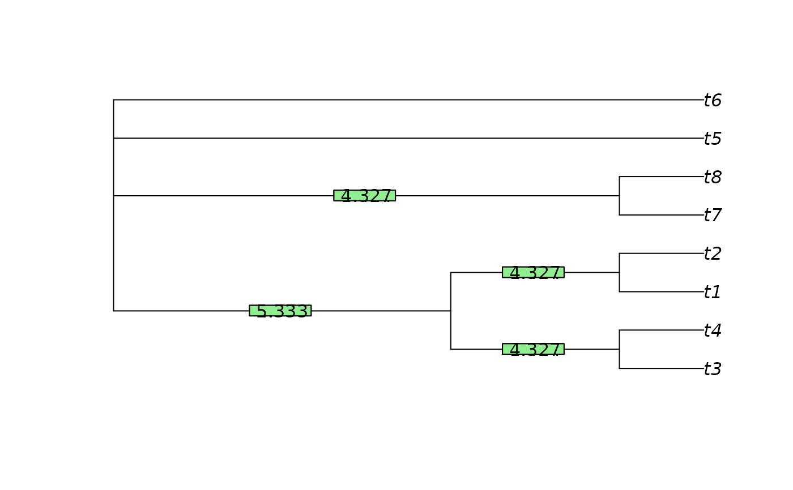

Sum the entropy (ClusteringEntropy()), clustering information content
(ClusteringInfo()), or phylogenetic information content (SplitwiseInfo())
across each split within a phylogenetic tree,
or the consensus of a set of phylogenetic trees (ConsensusInfo()).
This value will be greater than the total information
content of the tree where a tree contains multiple splits, as
these splits are not independent and thus contain mutual information that is
counted more than once
SplitwiseInfo(x, p = NULL, sum = TRUE)
ClusteringEntropy(x, p = NULL, sum = TRUE)
ClusteringInfo(x, p = NULL, sum = TRUE)
# S3 method for phylo
ClusteringEntropy(x, p = NULL, sum = TRUE)
# S3 method for list
ClusteringEntropy(x, p = NULL, sum = TRUE)
# S3 method for multiPhylo
ClusteringEntropy(x, p = NULL, sum = TRUE)
# S3 method for Splits
ClusteringEntropy(x, p = NULL, sum = TRUE)
# S3 method for phylo
ClusteringInfo(x, p = NULL, sum = TRUE)
# S3 method for list
ClusteringInfo(x, p = NULL, sum = TRUE)
# S3 method for multiPhylo
ClusteringInfo(x, p = NULL, sum = TRUE)
# S3 method for Splits
ClusteringInfo(x, p = NULL, sum = TRUE)
ConsensusInfo(trees, info = "phylogenetic", p = 0.5, check.tips = TRUE)A tree of class phylo, a list of trees, or a multiPhylo object.
Scalar from 0.5 to 1 specifying minimum proportion of trees that must contain a split for it to appear within the consensus.
Logical: if TRUE, sum the information content of each split to
provide the total splitwise information content of the tree.
List of phylo objects, optionally with class multiPhylo.
Abbreviation of "phylogenetic" or "clustering", specifying the concept of information to employ.
Logical specifying whether to renumber leaves such that leaf numbering is consistent in all trees.
SplitwiseInfo(), ClusteringInfo() and ClusteringEntropy()
return the splitwise information content of the tree -- or of each split
in turn, if sum = FALSE -- in bits.
ConsensusInfo() returns the splitwise information content of the
majority rule consensus of trees.
Clustering entropy addresses the question "how much information is contained
in the splits within a tree". Its approach is complementary to the
phylogenetic information content, used in SplitwiseInfo().
In essence, it asks, given a split that subdivides the leaves of a tree into
two partitions, how easy it is to predict which partition a randomly drawn
leaf belongs to (Meila2007; Vinh et al. 2010)
.
Formally, the entropy of a split S that divides n leaves into two partitions of sizes a and b is given by H(S) = - a/n log a/n - b/n log b/n.
Base 2 logarithms are conventionally used, such that entropy is measured in bits. Entropy denotes the number of bits that are necessary to encode the outcome of a random variable: here, the random variable is "what partition does a randomly selected leaf belong to".
An even split has an entropy of 1 bit: there is no better way of encoding an outcome than using one bit to specify which of the two partitions the randomly selected leaf belongs to.
An uneven split has a lower entropy: membership of the larger partition is common, and thus less surprising; it can be signified using fewer bits in an optimal compression system.
If this sounds confusing, let's consider creating a code to transmit the cluster label of two randomly selected leaves. One straightforward option would be to use
00 = "Both leaves belong to partition A"
11 = "Both leaves belong to partition B"
01 = 'First leaf in A, second in B`
10 = 'First leaf in B, second in A`
This code uses two bits to transmit the partition labels of two leaves. If partitions A and B are equiprobable, this is the optimal code; our entropy -- the average information content required per leaf -- is 1 bit.
Alternatively, we could use the (suboptimal) code
0 = "Both leaves belong to partition A"
111 = "Both leaves belong to partition B"
101 = 'First leaf in A, second in B`
110 = 'First leaf in B, second in A`
If A is much larger than B, then most pairs of leaves will require just
a single bit (code 0). The additional bits when 1+ leaf belongs to B
may be required sufficiently rarely that the average message
requires fewer than two bits for two leaves, so the entropy is less than
1 bit. (The optimal coding strategy will depend on the exact sizes
of A and B.)
As entropy measures the bits required to transmit the cluster label of each leaf (Vinh2010: p. 2840) , the information content of a split is its entropy multiplied by the number of leaves.
Phylogenetic information expresses the information content of a split in terms of the probability that a uniformly selected tree will contain it (Thorley et al. 1998) .
The information content of splits in a consensus tree is calculated by interpreting support values (i.e. the proportion of trees containing each split in the consensus) as probabilities that the true tree contains that split, following Smith (2022) .
Smith MR (2022).
“Using information theory to detect rogue taxa and improve consensus trees.”
Systematic Biology, syab099.
doi:10.1093/sysbio/syab099
.
Thorley JL, Wilkinson M, Charleston M (1998).
“The information content of consensus trees.”
In Rizzi A, Vichi M, Bock H (eds.), Advances in Data Science and Classification, 91--98.
Springer, Berlin.
doi:10.1007/978-3-642-72253-0_12
.
Vinh NX, Epps J, Bailey J (2010).
“Information theoretic measures for clusterings comparison: variants, properties, normalization and correction for chance.”
Journal of Machine Learning Research, 11, 2837--2854.
doi:10.1145/1553374.1553511
.
An introduction to the phylogenetic information content of a split is given
in SplitInformation()
and in a package vignette.
Other information functions:
SplitEntropy(),
SplitSharedInformation()
library("TreeTools", quietly = TRUE)
SplitwiseInfo(PectinateTree(8))
#> [1] 22.53747
tree <- read.tree(text = "(a, b, (c, (d, e, (f, g)0.8))0.9);")
SplitwiseInfo(tree)
#> [1] 10.73217
SplitwiseInfo(tree, TRUE)
#> [1] 8.641244
# Clustering entropy of an even split = 1 bit
ClusteringEntropy(TreeTools::as.Splits(c(rep(TRUE, 4), rep(FALSE, 4))))
#> [1] 1
# Clustering entropy of an uneven split < 1 bit
ClusteringEntropy(TreeTools::as.Splits(c(rep(TRUE, 2), rep(FALSE, 6))))
#> [1] 0.8112781
tree1 <- TreeTools::BalancedTree(8)
tree2 <- TreeTools::PectinateTree(8)
ClusteringInfo(tree1)
#> [1] 33.9609
ClusteringEntropy(tree1)
#> [1] 4.245112
ClusteringInfo(list(one = tree1, two = tree2))
#> one two
#> 33.96090 36.25139
ClusteringInfo(tree1) + ClusteringInfo(tree2)
#> [1] 70.21229
ClusteringEntropy(tree1) + ClusteringEntropy(tree2)
#> [1] 8.776537
ClusteringInfoDistance(tree1, tree2)
#> [1] 2.713688
MutualClusteringInfo(tree1, tree2)
#> [1] 3.031424
# Clustering entropy with uncertain splits
tree <- ape::read.tree(text = "(a, b, (c, (d, e, (f, g)0.8))0.9);")
ClusteringInfo(tree)
#> [1] 18.98028
ClusteringInfo(tree, TRUE)
#> [1] 17.16773
# Support-weighted information content of a consensus tree
set.seed(0)
trees <- list(RandomTree(8), RootTree(BalancedTree(8), 1), PectinateTree(8))
cons <- consensus(trees, p = 0.5)
p <- SplitFrequency(cons, trees) / length(trees)
plot(cons)
LabelSplits(cons, signif(SplitwiseInfo(cons, p, sum = FALSE), 4))
ConsensusInfo(trees)
#> [1] 7.080254
LabelSplits(cons, signif(ClusteringInfo(cons, p, sum = FALSE), 4))

ConsensusInfo(trees, "clustering")
#> [1] 18.31378